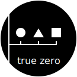
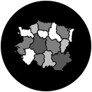
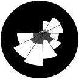
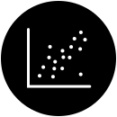

analysing textcomparisonsconceptsdata over timedistributionhierarchyhow things worklocationpart to wholepatternsprobabilityprocesses and methodsproportionsrangereference toolrelationships
Data properties
single seriesmultiple seriesnominal level of measurementordinal level of measurementinterval level of measurement

ratio level of measurement
Chart types
100 stacked bar chart100 percent bar chartalluvial 1alluvial 2arc diagramarc dot chartarea bandsarea graphbar graphbarbell plotbarcode plotbean plotbee swarm box plotbox percentile plotbox plot 2box plotbrainstormbubble chartbubble mapbubble matrixbullet chartbullet graph 2bump chartcalendarcandlestick chartchange bar chartchernoff faceschord diagramchoropleth map 2

choropleth mapcircle packingcircular gaugecircular tree diagramconfidence stripsconnected scatterplotconnection mapcontrol chartdashboarddemers cartogramdensity plotdonut chartdorling mapdot distribution plotdot graphdot matrix charterror barsflow chartflow map 2flow mapfunnel chartgantt chart 2gantt chartgraded error barsheat mapheatmap 2histogramhive plothorizon ploticicle diagramillustration diagramkagi chartline graph 2line graphlollipop chartmarimekko 2marimekko chartmultiset bar chartnetwork diagram

nightingale rose chartnon ribbon chord diagramnotched box plotopen high close low chartparallel coordinatesparallel setspareto chartpictogram 2pictogram chartpie chartpoint and figure chartpoint mappopulation pyramidproportional area chartq q plotradar chart-newradar chartradial bar chartradial column chartranged area graphrenko chartsankey diagram

scatterplotslopegraphspan chartspiral plotsplit bar chartstacked area graphstacked bar chartstacked bar graphstem and leaf plotstream graphsunburst diagramtally chartternary graphtile grid maptabletime tabletimelinetree diagramtreemapunit area 2unit chart 2unit chartvase plotvenn diagramviolin plotvoronoiwaffle chartwaterfall chartwin loss chartword cloud